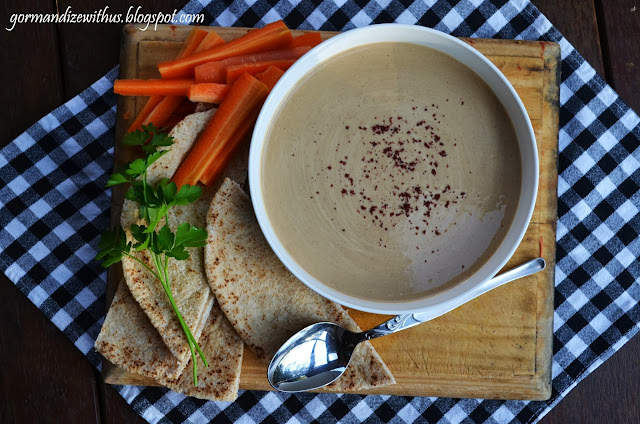

Main Menu
Creamy Tahini Salad (Egyptian Tahini Salad)

Tahini Salad is considered as a popular salad in Egypt which is made of sesame seeds, and it’s very delicious with any grilled beef or chicken plates.
Ingredients
- 1/2 cup unhulled tahini
- Juice of 1/2 lemon
- 3/4 cup water
- 1 tsp cumin
- 2 garlic cloves, minced finely
- Salt and pepper to taste
- Sumac, to garnish
Preparation
- 1. Place tahini in a bowl and add the lemon juice. Mix well until completely combined. Add the water bit by bit, stirring well all the while until the sauce is creamy and there are no lumps of tahini remaining.
- 2. Add the cumin, garlic, salt and pepper and mix well.
- 3. Chill in the fridge for at least half an hour before serving.
Main Menu